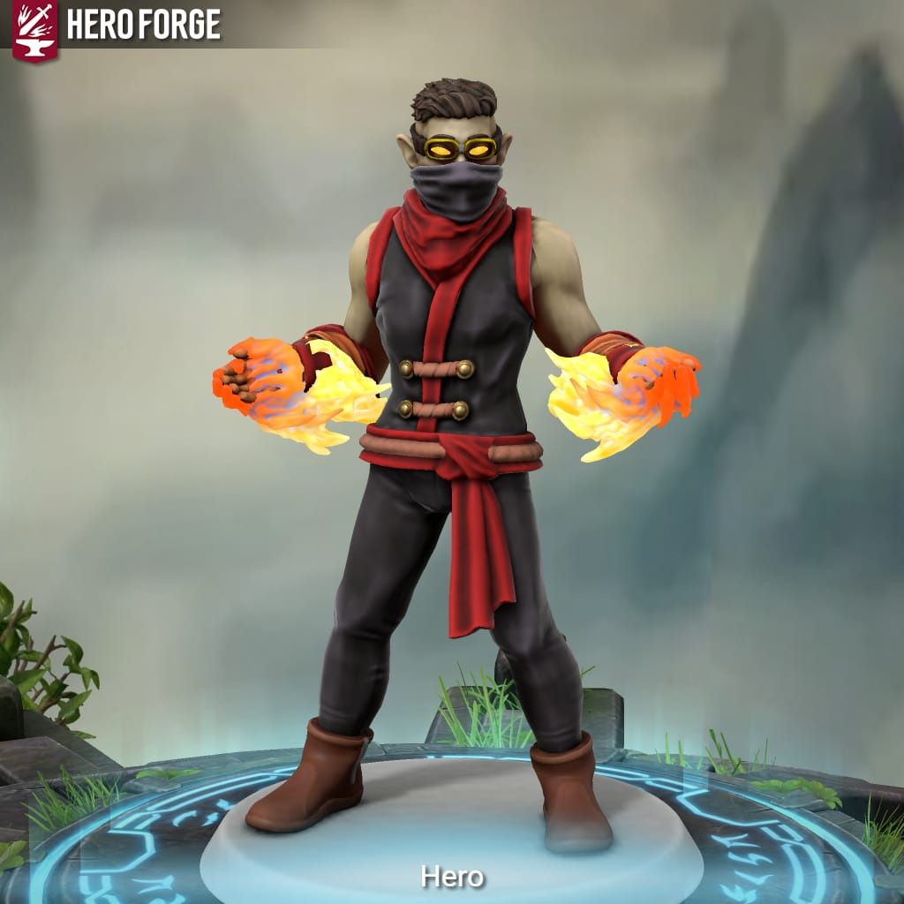
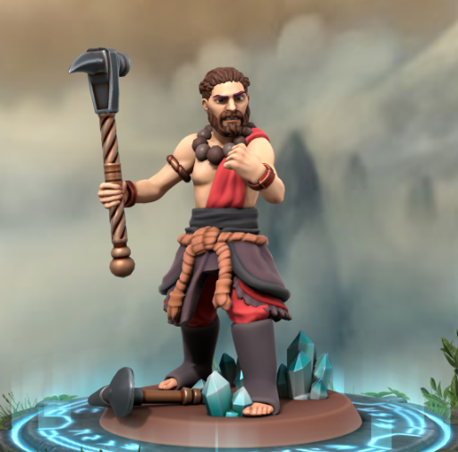
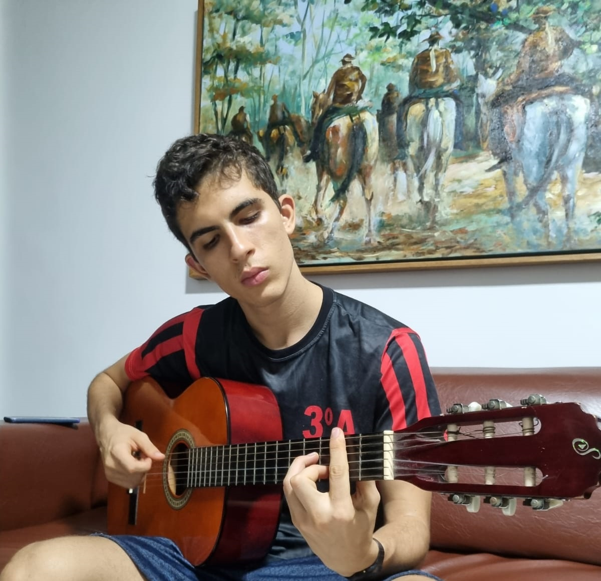

Hobbies
Minha Aventura
No ano de 2022, meu irmão mais velho me chamou para participar uma mesa de Dungeons and Dragons Online, com a campanha Curse of Strahd.
Imediatamente me apaixonei pela prática, e sigo participando de uma campanha de Lost Mines of Phandelver, outra aventura dentro do mundo.
Além de extravazar a criatividade, ao jogar RPG, aprendo a desenvolver relacionamentos sociais em cenário BEEEEM adversos, além de persuação e improviso em contextos unusuais.
Gochnor Lef
Gochnor foi um humano da classe bárbaro que joguei. Era um personagem bem engraçado de se jogar. Ele não sabia muito bem se comportar socialmente e era bem ordeiro até para um bárbaro. Ele era escravizado por anões da montanha e minerava com uma das mãos, por ter a outra acorrentada. Conseguiu escapar e buscou refúgio em baróvia, procurando uma cura para seu braço atrofiado enquanto procurava derrotar o destemido vampiro Strahd.
Garfiel Rondoniel
Garfield (conhecido como "Gar") era de uma tribo de ciganos que rondavam pela região de Phandelver. Indo para uma das cidades da região, Gar e sua mãe foram capturados por uma gangue de ladrões. Gar teve que trabalhar para essa gangue, visto que sua mãe estava sob ameaça. Tendo um talento nato com magia, aprendeu a conciliar seus dotes mágicos com suas capacidades sociais para fugir de situações complicadas. Agora, após ter sido resgatado por um grupo de aventureiros, ele tenta resgatar sua mãe dos perigos da Gangue que a mantém como refém. (Talks/ blasts his way through problems)
Música
Violão
Toco violão desde os meus 13 anos de idade. Ainda tenho um nível intermediário, mas costumo frequentemente me debruçar sobre meu instrumento querido durante a correria do dia-a-dia
Cantar
Gosto bastante de cantar. Faço parte do grupo de música da minha igreja e canto nas horas vagas (banho, lavando pratos, etc.)
Ouvir Música
Sou um fã de música muito grande! Escuto músicas de diversas origens, de diversas épocas! Sou um grande fã de MPB, mas ultimamente tendo escutado músicas intenacionais, também. Caso você, caro leitor, queira saber Mais dos meus gostos musicais, os convido a clicar no meu perfil do Spotify .
Esportes
Gosto de todos os tipos de esportes (embora não seja bom na maioria). Últimamente tenho praticado a corrida e a musculação, mas já joguei muito vôlei e nadei competitivamente, também. Utilizo a bicicleta como o meu principal meio de locomoção nas redondezas de casa.

Garfield Rondoniel

Gochnor Lef

Foto casual tocando violão